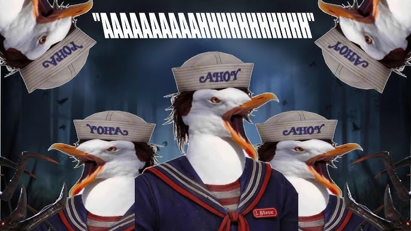

In the most recent Stranger Things update, the beloved Steve scream was replaced due to complaints that his scream was loud and annoying in teams using perks to force him to scream frequently. This has outraged the community as these builds were often unserious, mildy annoying, and often resulted in a free win for the killer. Sign the petition to bring back Steagull